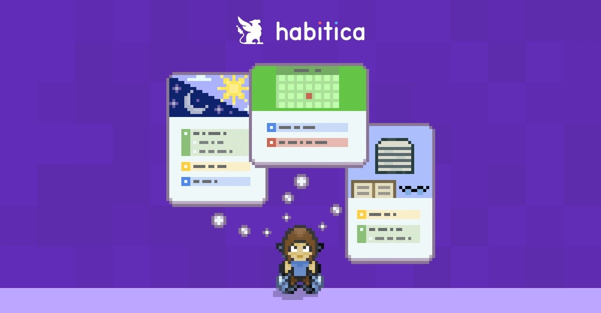

Habits
- Practice Voice Exercises
Why? Because I want to speak openly and comfidently with my natural voice. - Body and Posture Awareness
Why? Because it help me relax body's tension and so I can learn to listen to what my body is telling me. - Breath Awareness and Deep Breading
Why? Because it brings me back in the present moment and helps to keep the emotions in balance. - Develop Concentration
Why? Because we live in a world of distractions and concentration is one of the most valuable skills to develop to succeed in life. - Emotional State Awareness
Why? Because emotion are the driving force behind all of my actions and becomes aware of emotions is the first step for mastering them. - Drinking & Glasses of Water Per Day
Why? Because keeping hyperated is crucial for health and well-being. - Cultivate a State of Abundance
Why? Because scarity mindset is the source of all suffering and i want to live a happy life.